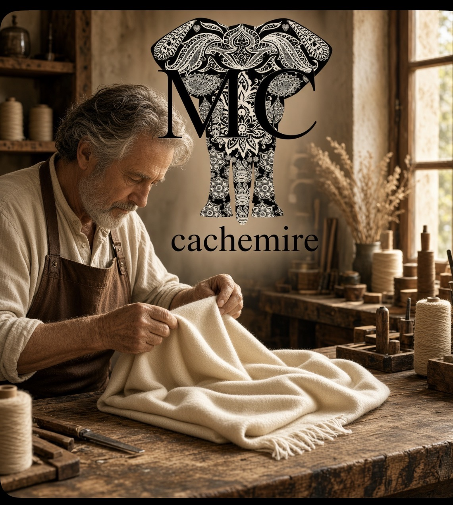
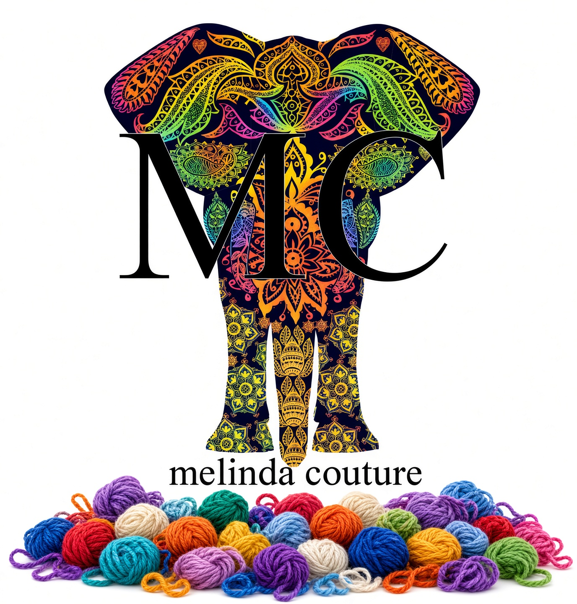

Il cashmere nasce in Mongolia, dove le pecore vivono in un clima estremo che rende il loro vello più fine e morbido al mondo. Da lì parte tutto.
MC Kashmir è nata da un’idea semplice: portare quel vello direttamente a chi lo sceglie, senza passaggi inutili. Le fibre vengono selezionate a mano, una per una, e trasformate in maglieria che mantiene la leggerezza e il calore del cashmere puro.
Ogni capo è prodotto in tirature limitatissime, pensate come capsule esclusive. Non si tratta di produzione di massa: ogni pezzo è curato nei dettagli, dalla scelta del filato alla lavorazione finale.
Il risultato è un prodotto che si sente al tatto prima ancora che si veda — soffice, leggero, e fatto per durare.
Prodotto pregiato dal vello delle pecore, soffice, leggero e caldo — ideale per autunno e inverno.